Inverted lockup


On ink grounds, flip to the white colorway. Symbol may pair with the wordmark or stand alone.

On ink grounds, flip to the white colorway. Symbol may pair with the wordmark or stand alone.